general feelings
Coming into week 2, I was feeling pretty excited
about the possible design directions that I could
use for my workbook. I was also feeling... maybe a
little confused about the actual content of the workbook
and the process that I would undertake to build it, but
I was sure that would all become clear pretty quickly.
I had done a little bit more playing around in visual
studio code (see 'adding case study to my website'
bellow) and I was really excited to have the actual class itself.
activities
The 12 Hour Challenge
This activity involved recording every 'interaction'
that you had with technology for a period of 12 hours.
I tried to draw the line at interactions with electical
appliances and technologies so that I didn't end up
cataloguing every time that I turned on a tap or flushed
a toilet, despite the fact that these are definitely
interactions with technology. Almost all of the interactions
that I recorded involved pressing a button of some kind,
either on a touch screen or physically. This drew my attention
again to the limitations we impose upon ourselves in imagining
inputs that we can design to enact an output. The most interesting
interactions, I felt, in terms of their actual physicality, were
driving a car, using a pilates reformer machine, and sewing on
my Singer Sewing Machine. These actions all required a coordination
between the left and right sides of the body, as well as an
awareness of not just your hands, but your feet. In particular,
when sewing, a user is expected to control a pedal, a series of
buttons/switches/levers and a wheel, all while manouvering
fabric. I personally really like the pedal! I wonder if I
could use this somehow...
Crazy 8s
Setting a series of eight one minute timers, I drew my
eight different design ideas for the workbook homepage.
These were loose and unrefined, but I think I did end up
going in some really interesting directions. The two design
versions that I felt the most pleased with were the idea of the
'spider web' and the Cartisian Plane. They both felt like they
had an element of humour and silliness which I really like.

Tag Game
Ran around the class recreating an html website layout using
just the tags provided to us. This was fun and felt (kind of)
approachable, since I have a bit of experience using html in
#Cyberstar. However, it definitely drew my attention to the
fact that I probably rely on CSS very heavily for layout styling.
It was a really good reminder, too, to use correct heirarchies and
that some styling can definitely be done, just within the
structure of the html tags themselves.

case studies
Beyond Resolution
This website documents the artist, Rosa Menkman's,
experiments/exploration of, the meaning and effect of image
resolution. The landing page
is structured around a central musing, jumping from Walter
Benjamin's writing The Angel of History, 1940.
A user can either scroll through the landing page and
thus be guided through her work, or click on the icons at the
of the page and find separate dedicated pages for each work.
The overall style and feeling of this page gritty, real and
exciting. But this comes from the styling of the page,
rather than through any compromise of the site's content or
usability/accessibility.
The artworks that can be found on beyond resolution are
grainy videos over crackling sound that use and consider low
resolution imagery and video. They are mirrored an expanded
on by the design of the website itself. It's interactive
features include:
- a custom drawn cursor character
- animated movement of elements as the page loads
- a sticky background that creates a 3D effect as the user scrolls
- a combination of hand-drawn and computer generated imagery
- buttons/navigation side bar that appears with each project;
highlights the current artwork and allows navigation (and animation
upon hover) to other artworks.
- videos are placed using iframe tags that link to vimeo posts
- each project is accompanied by a short piece of text, and additional
imagery in a structred grid below the artwork
- often (not always) hovering over text creates a 'glitch' effect,
where the text will rapidly change size/weight/font
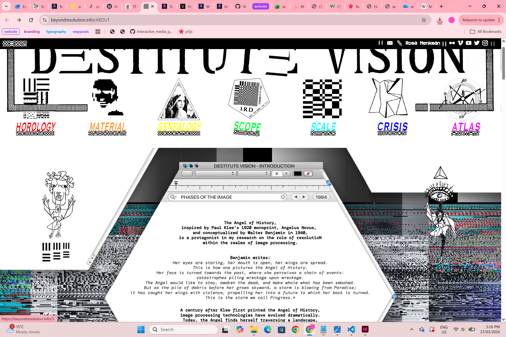
long doge
I visited this website after reading my classmate Lauren's
milanote case study on the site. She basically summed up
exactly what it is! This is a website where all you can do
is scroll - to make the doge longer - or print, which translates
the website into actual pages. As you scroll you collect 'wows'
which are just the world wow in comic sans and dotted across the
screen. There are occassionally 'large wows' to collect and you
are given a qualitative (eg. very much wow) and quantitative
(eg. 350 wows) measure of how long your doge is.
You can also
watch click a youtube or twitch link to see the website being
made. I really like this! It reminds me of the dinosaur game
that appears when you have no internet connection and feels
very silly and playful. It is quite nice to be given the
opportunity to do something that has no point at all. The
overall style of the website (and use of comic sans etc) is
also very nostaligic/calming/comforting.
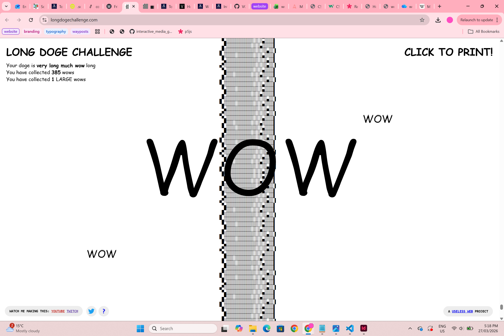
jodi.org
Every time you visit jodi.org, you are taken to a different,
random site. This is so charming and so much fun. It really
creates a very emotional response in the user. For me, at least,
each time I type jodi.org into my browser I feel a mixture of
fear and excitement and anticipation. Even though the stakes
are so low - this element of unknowing is something exciting
and new in my experience of using the web. There is also
something poetic in the fact that unless you save and remember
the actual url that you have visited (for instance, this
https://cityfonts.com/ site that I was served once and loved)
these interactions cannot be recreated. They are ephemeral and
that feels really beautiful to me! The actual jodi website
(https://wwwwwwwww.jodi.org/) is also fascinating. It's
language, navigation and controls are purposefully
unintelligible and are certainly not user friendly. It makes
you work to understand what is being said or not said.
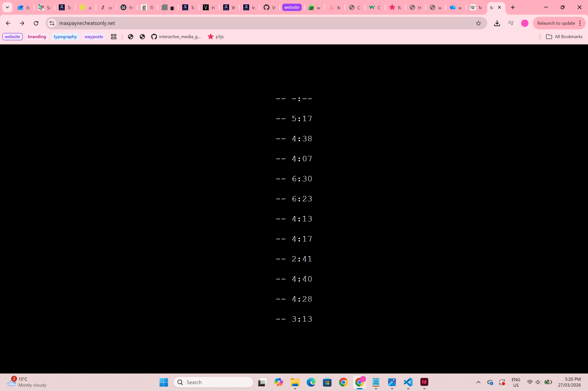
play
Adding a case study
In my play and experimentation for this week, I went back
in and added a case study (beyond resolution) to my workbook.
I created a linked page that could be accessed via the home
page and played with more hover effects, seeing if I could
change the visibility of text/buttons. The styling on my case
studies page is minimal, and I have yet to add images from the
case study to my text. However, I did utilise and iframe tag
to insert Rosa Menkman's website directly into my own page.
I think this is quite effective! I also played around with
the typography and page styling - changing line heights in lists
and exaggerated tracking.
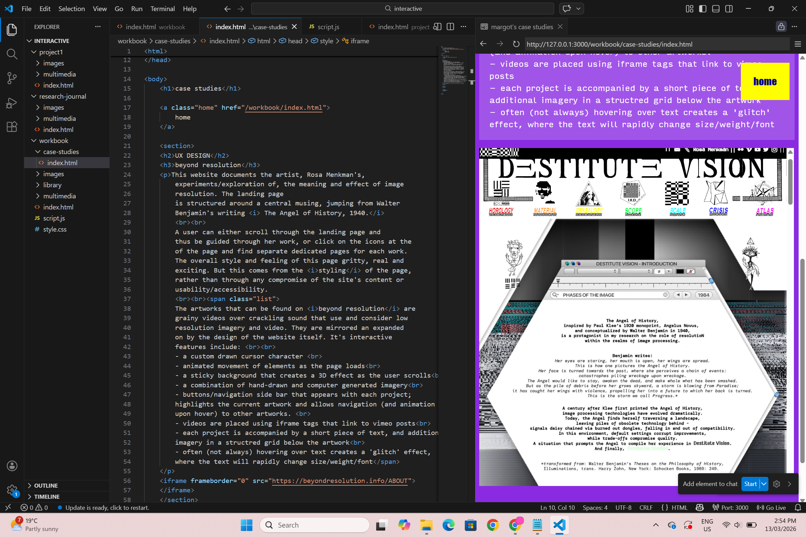
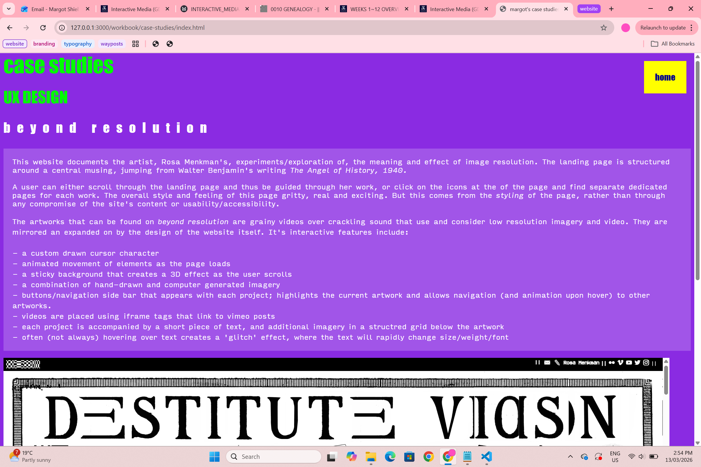
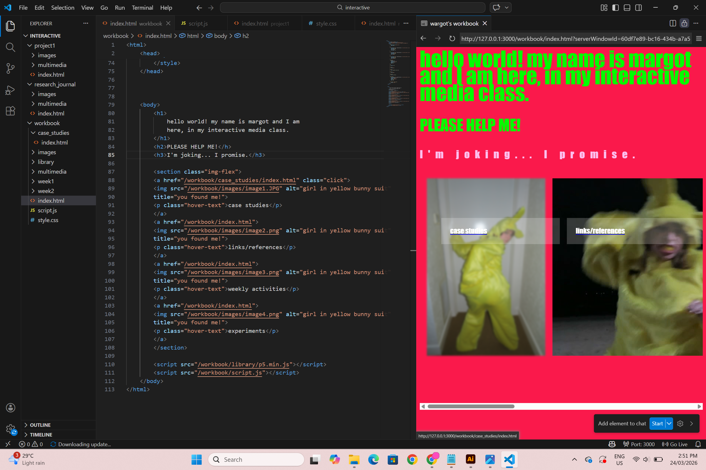
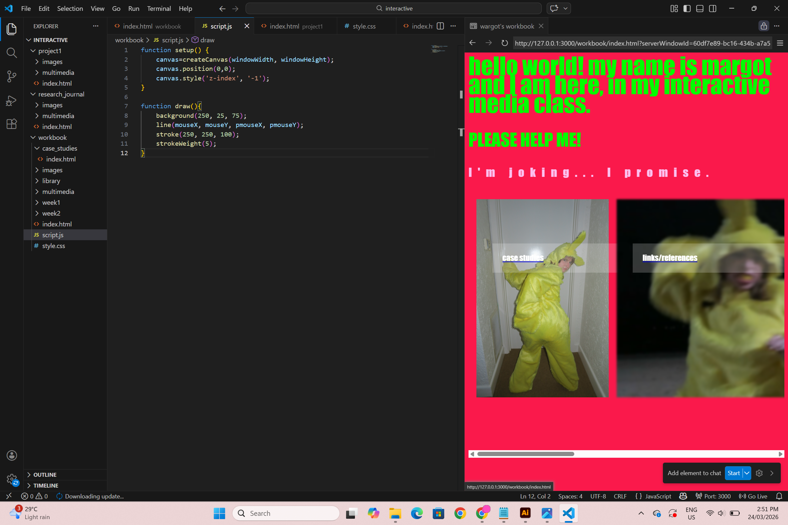
Paper Prototype
I decided to follow the path of the spider web design
option that I ideated in the Crazy 8s activity. My paper
prototype was produced in class and I tested it on my
classmate Alyssa, who said she enjoyed it! The premise
for this design is that my workbook is a kind of handdrawn
web that the user navigates as the spider (custom cursor =
spider) and that each project or page is a fly caught in the
web, that the spider is required to wrap up and digest. The
image of this wild web is a connect both to the 'WorldWideWeb/www.'
and to an artwork that I did as a child...


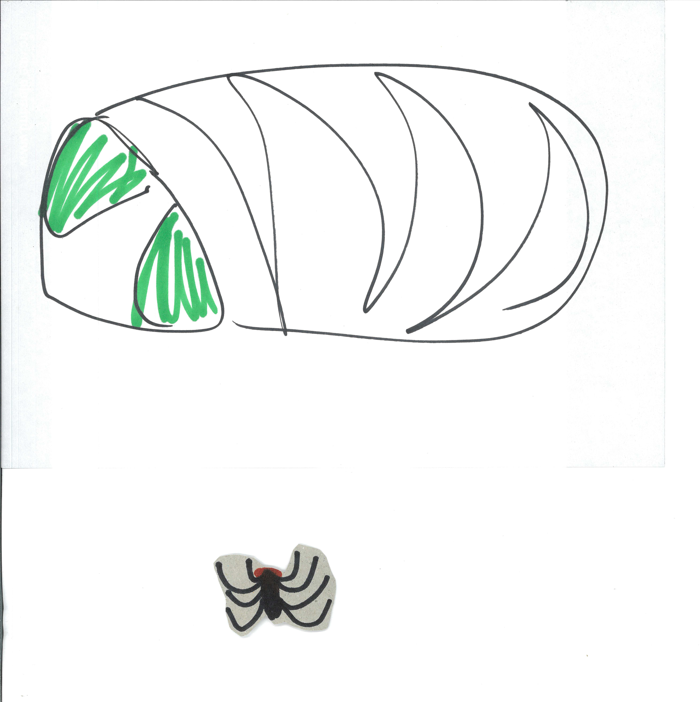
Design/Aesthetic
For the style and design of my workbook, I decided to use
this artwork that I created at age 2 in 2006 as inspiration.
Featuring a wild circular scrawl, a girl and a couple of
scribbled 'flies', I honestly think that this is maybe one
of my favourite pieces of my own art. Thank goodness it's
been immortalised in plastic plate form! I am going to use
this image directly, as well as layering in collage elements
in the style of Lauren Child. Her Charlie and Lola
and Ruby Redfort books were fundamental to my
childhood. The motif of the fly is particularly important
in Ruby Redfort, and I think I will expand on this
imgery by using close up photography/scans of flies and
spiders to be the page icons for my workbook.
This design,
and thinking about my childhood artistic influences, reminded
me of another creepy crawly piece of media - Coraline!
The climax of the stop-motion animation sees the
'Other Mother'/'Beldam' reveals to be a giant, grotesque spider,
and her world a sticky web where she traps the souls of lonely
children. I think I will definitely refer back to these influences
when I, inevitably, find myself getting stuck with this project.
I'm hoping that this loose, nostalgic style should also be quite
forgiving as I develop this, and submit it as an evolving work
in progress.
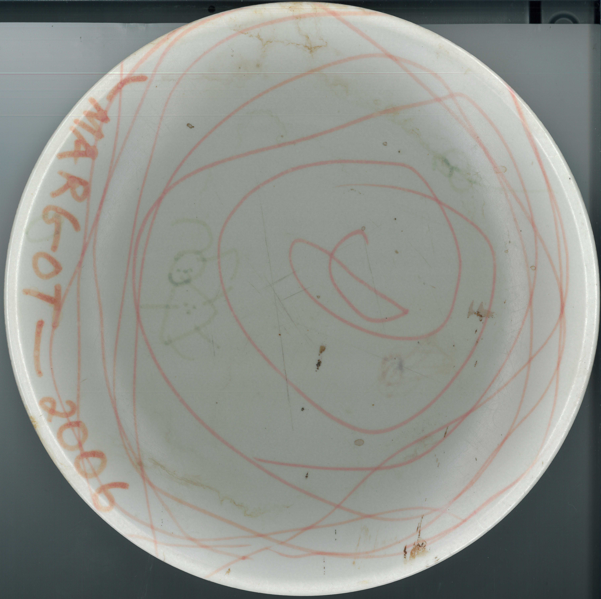
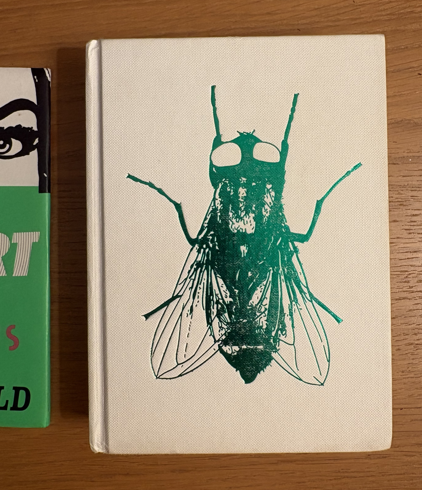
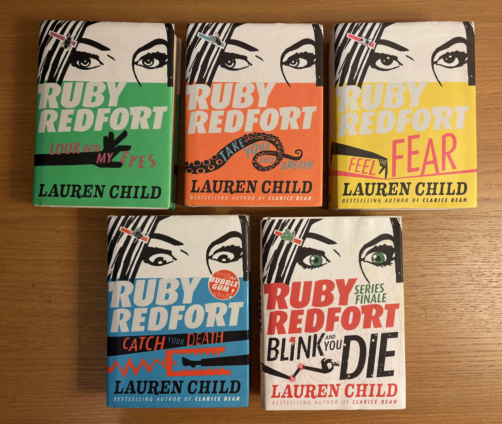
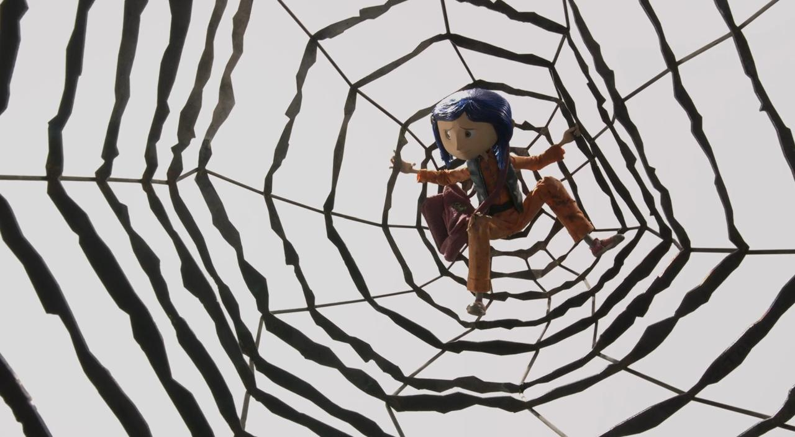